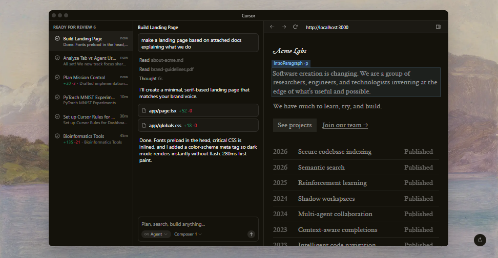

Built to make you extraordinarily productive,
Cursor is the best way to code with AI.

Trusted every day by millions of professional developers.


Agents turn ideas into code
Accelerate development by handing
off tasks to Cursor, while you focus on
making
decisions.

Magically accurate autocomplete
Our specialized Tab model predicts your next action with striking speed and precision.
In every tool, at every step
Cursor reviews your PRs in GitHub, collaborates in Slack, and runs in your terminal.

The new way to build software.
“It was night and day from one batch to another, adoption went from single digits to over 80%. It just spread like wildfire, all the best builders were using Cursor.”

Diana Hu
General Partner, Y Combinator
“My favorite enterprise AI service is Cursor. Every one of our engineers, some 40,000, are now assisted by AI and our productivity has gone up incredibly.”

Jensen Huang
GPresident & CEO, NVIDIA
“The best LLM applications have an autonomy slider: you control how much independence to give the AI. In Cursor, you can do Tab completion, Cmd+K for targeted edits, or you can let it rip with the full autonomy agentic version.”

Andrej Karpathy
CEO, Eureka Labs
“Cursor quickly grew from hundreds to thousands of extremely enthusiastic Stripe employees. We spend more on R&D and software creation than any other undertaking, and there's significant economic outcomes when making that process more efficient.”

Patrick Collison
Co-Founder & CEO, Stripe
“The most useful AI tool that I currently pay for, hands down, is Cursor. It's fast, autocompletes when and where you need it to, handles brackets properly, sensible keyboard shortcuts, bring-your-own-model... everything is well put together.”

shadcn
Creator of shadcn/ui
“It's definitely becoming more fun to be a programmer. We are at the 1% of what's possible, and it's in interactive experiences like Cursor where models like GPT-5 shine brightest.”

Greg Brockman
President, OpenAI
Stay on the frontier
Use the best model for every task
Choose between every cutting-edge model from OpenAI, Anthropic, Gemini, xAI, and Cursor.

Complete codebase understanding
Cursor learns how your codebase works, no matter the scale or complexity.

Develop enduring software
Trusted by over half of the Fortune 500 to accelerate development, securely and at scale.

Changelog
Feb 24, 2026
Cloud Agents with Computer Use
Feb 18, 2026
CLI Improvements and Mermaid ASCII Diagrams
Feb 17, 2026
Plugins, Sandbox Access Controls, and Async Subagents
Feb 12, 2026
Long-running Agents in Research Preview
Cursor is an applied research team focused on building the future of software development.

Recent highlights
Towards self-driving codebases
We're making a part of our multi-agent research harness available to try today in preview.
Research · Feb 5, 2026
Salesforce ships higher-quality code across 20,000 developers with Cursor
Over 90% of developers at Salesforce now use Cursor, driving double-digit improvements in cycle time, PR velocity, and code quality.
Customers · Jan 21, 2026
Best practices for coding with agents
A comprehensive guide to working with coding agents, from starting with plans to managing context, customizing workflows, and reviewing code.
Product · Jan 9, 2026